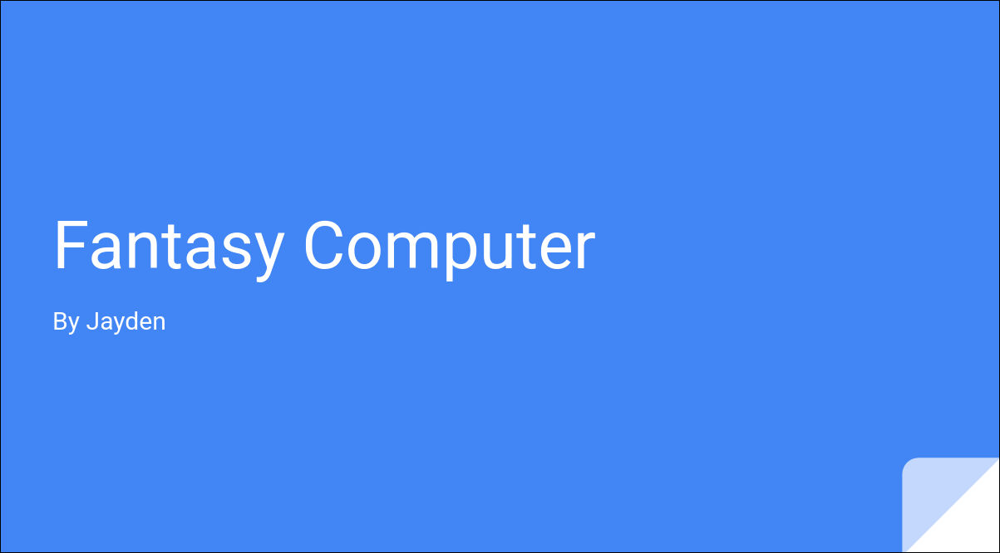
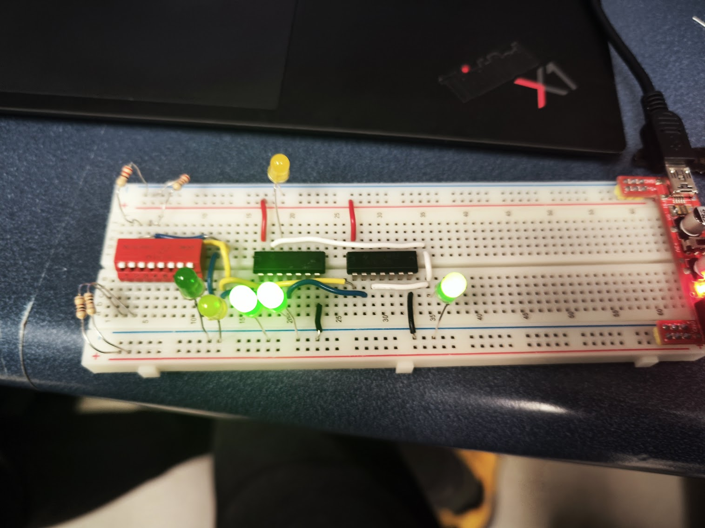

In this activity, I had to go research components for a computer that had to fit a certain budget, a $900 computer and a $8000 computer. For this task, I used the website PC part picker to find my components, checking compatibility and searching for parts under my budget. Through this task, I learnt a lot about computer parts and the market for them, allowing me to start preparing for building my own.
Projects
This is the Projects tab for TEJ
Fantasy Build

Custom Gate

This is my own custom gate, it also represents an emulated OR gate. This connects an NOT gate into AND gate into another NOT gate. This gate shows my understanding in wiring and logic gates.
Micro:bit
This was the end of unit project, I was tasked with making a micro:bit program attached to a kind of hardware and present it as a business pitch. This project trained my presentation skills, hardware building skills, wiring skills and more. This project was definitely one of a kind and helped me understand more about the use cases of the micro:bit.